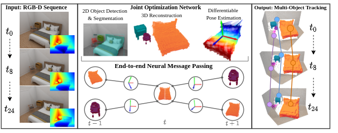

Our network leverages a 2D detection backbone with additional NOC prediction and 3D
reconstruction heads to predict per-object dense correspondences maps and 7-DoF pose parameters.
We leverage those correspondences in our neural message passing based, fully end-to-end learnable
network to model dependencies between objects over time for consistent multi-object tracking.
We propose a novel approach for joint 3D multi-object tracking and reconstruction from RGB-D sequences in indoor environments.
To this end, we detect and reconstruct objects in each frame while predicting dense correspondences mappings into a normalized object space.
We leverage those correspondences to inform a graph neural network to solve for the optimal, temporally-consistent 7-DoF pose trajectories of all objects.
The novelty of our method is two-fold:
first, we propose a new graph-based approach for differentiable pose estimation over time to learn optimal pose trajectories;
second, we present a joint formulation of reconstruction and pose estimation along the time axis for robust and geometrically consistent multi-object tracking.
In order to validate our approach, we introduce a new synthetic dataset comprising 2381 unique indoor sequences with a total of 60k rendered RGB-D images for multi-object tracking with moving objects and camera positions derived from the synthetic 3D-FRONT dataset.
We demonstrate that our method improves the accumulated MOTA score for all test sequences by 24.8% over existing state-of-the-art methods. In several ablations on synthetic and real-world sequences, we show that our graph-based, fully end-to-end-learnable approach yields a significant boost in tracking performance.
MOTFront - Synthetic Indoor MOT Dataset
MOTFront provides photo-realistic RGB-D images with their corresponding instance segmentation masks, class labels, 2D & 3D bounding boxes, 3D geometry, 3D poses and camera parameters.
The MOTFront dataset comprises 2,381 unique sequences with a total of 60,000 images and is based on the 3D-FRONT dataset.
@misc{https://doi.org/10.48550/arxiv.2206.13785,
doi = {10.48550/ARXIV.2206.13785},
url = {https://arxiv.org/abs/2206.13785},
author = {Schmauser, Dominik and Qiu, Zeju and Müller, Norman and Nießner, Matthias},
keywords = {Computer Vision and Pattern Recognition (cs.CV), FOS: Computer and information sciences, FOS: Computer and information sciences},
title = {3D Multi-Object Tracking with Differentiable Pose Estimation},
publisher = {arXiv},
year = {2022},
copyright = {Creative Commons Attribution 4.0 International}
}